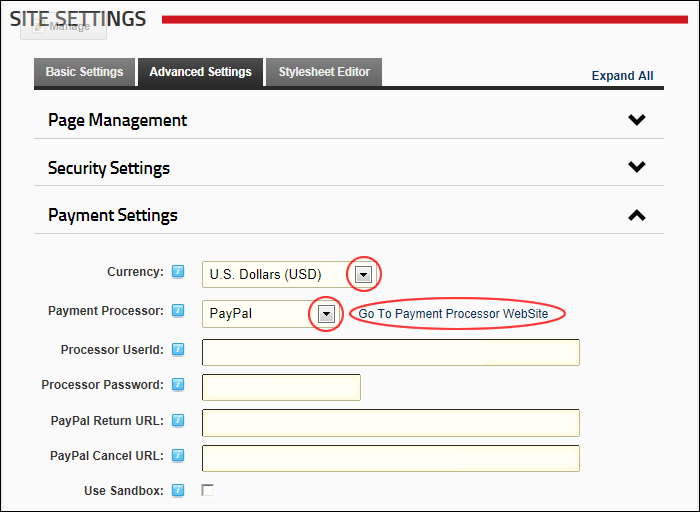
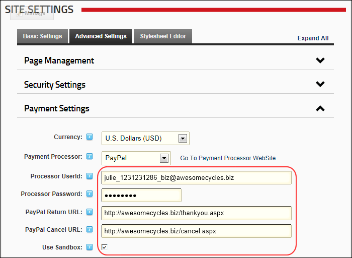

Setting the Payment Processor
How to configure payment processing for this site and receive payment from users who subscribe to Member Services (roles) on this site. PayPal is the only payment processor included by default, however your DNN developer can configure DNN to work with other providers. The PayPal Sandbox (https://developer.paypal.com) allows you to test PayPal and have test orders sent to the payment gateway without taking live transactions. Enabling the PayPal Sandbox allows you to create paid subscriptions and test the process without spending any real money. To use this system you must sign up for a Sandbox account and use those credentials in the Payment Settings section shown below. See "Adding a Security Role with a Fee" for more details on setting up subscriptions.
- Navigate to Admin >
 Site Settings.
Site Settings.
- Expand the Payment Settings section.
- At Currency, select the currency to process payments with.
- At Payment Processor, select a payment processing company from the drop down list. E.g. PayPal
- Click Go To Payment Processor WebSite and sign up for an account.

- In the Processor UserId text box, enter the UserID code provided by PayPal.
- In the Processor Password text box, enter the Password provided by PayPal.
- Optional. In the PayPal Return URL text box, enter the page URL that subscribers are redirected to after payment. Leave blank to return to the Home page.
- Optional. In the PayPal Cancel URL text box, enter page URL that subscribers are redirected if payment is canceled. Leave blank to return to the Home page.
- At Use Sandbox?, select from these options
-
to enable PayPal Sandbox.
-
to disable Sandbox and enable live transactions.

-
Click the Update button.